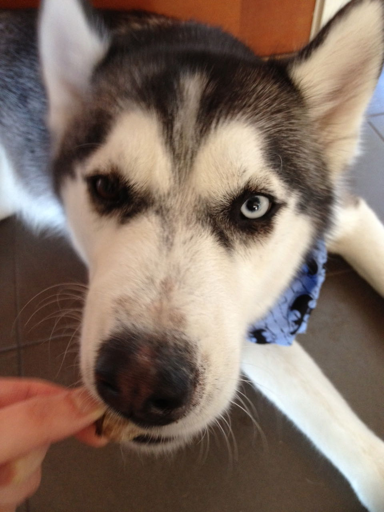
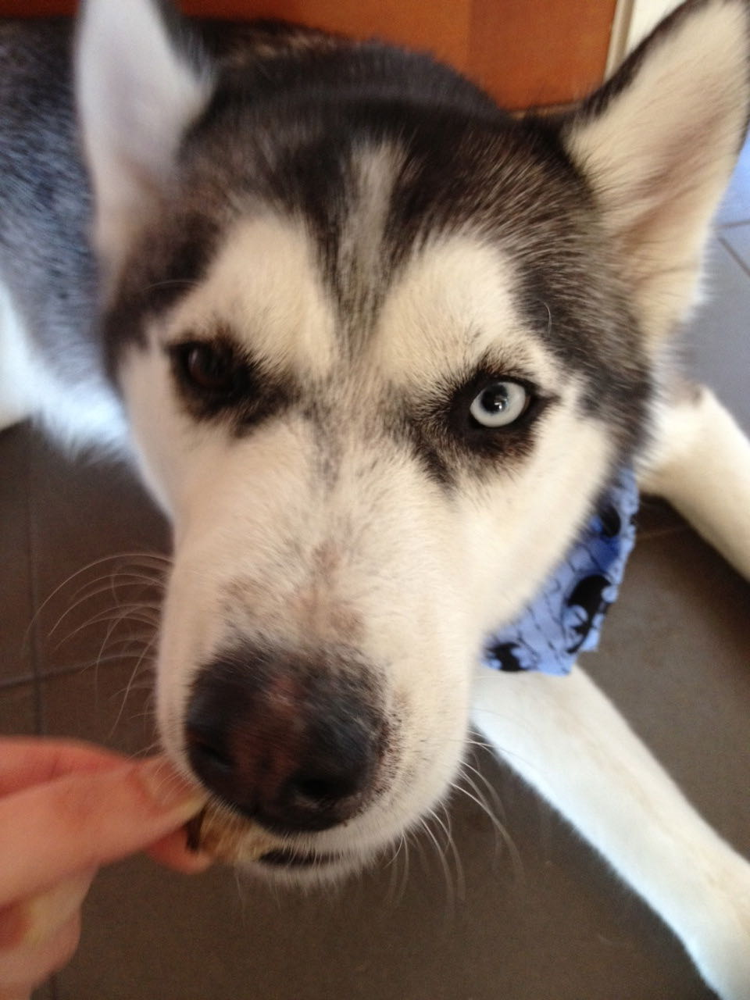
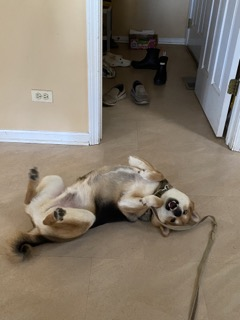
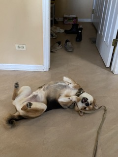
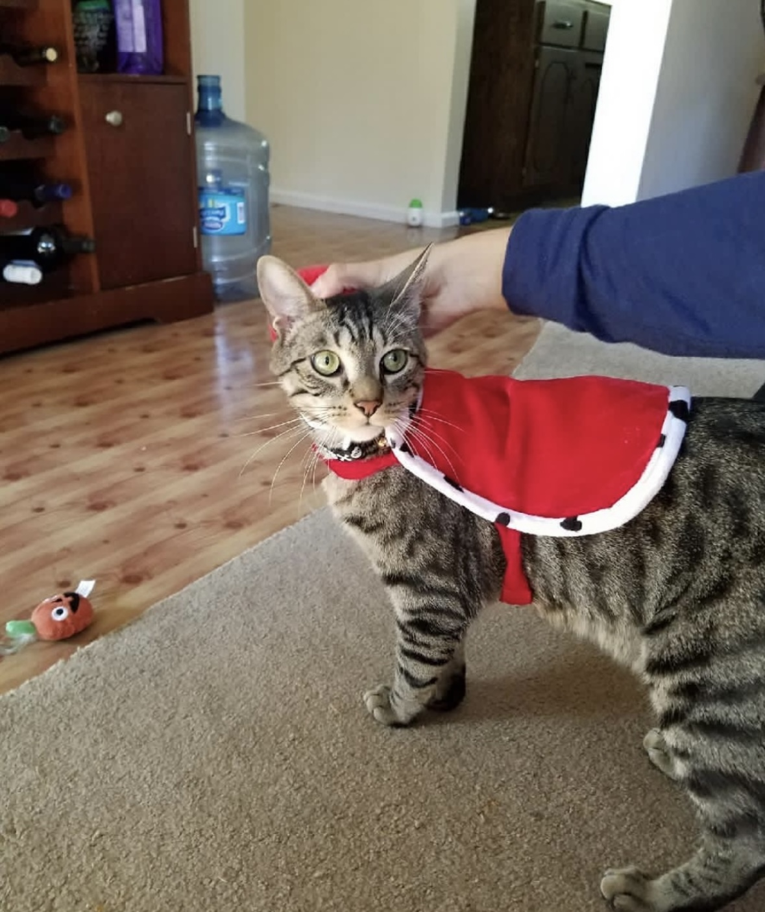
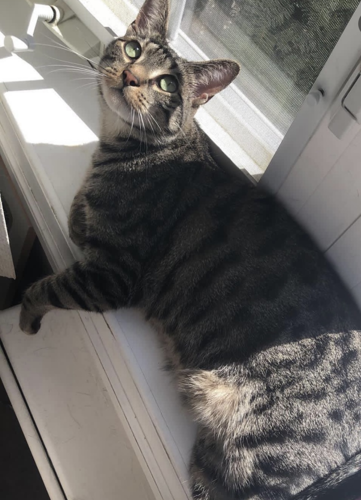
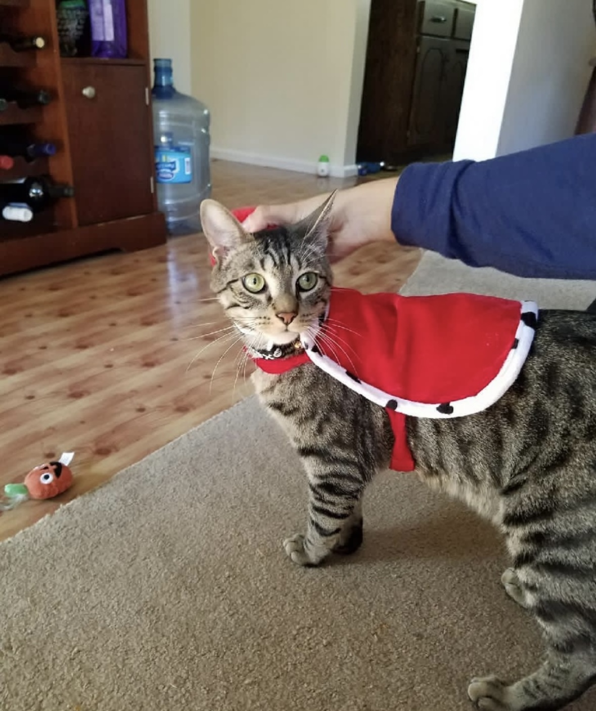
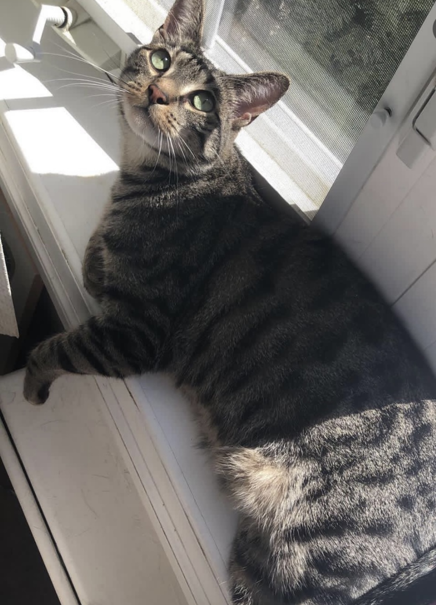

Carter

Carter was born in Seattle. However, my brother bought him and brought him to Boston. Whenever my brother did not have time to walk Carter, he would put him on the treadmill. When Carter became too much of a responsibility for my brother as a college student, he took Carter to Vancouver to live with my mom, sister, and me. Because we lived in the mountains, he would sometimes howl in the middle of the night whenever he saw a wild animal.”
Whenever I threw him a ball, he ran to the ball but never brought it back to me. He would sometimes escape the backyard of our house if we forgot to close the gates by accident. Even if we looked for him everywhere and did not find him, he knew the way home and always came back in the end. He loved going to the forest and the beach. He had his own spot on the living room couch and would television with us if he was bored or tired.
Photo Gallery


 

Likes
- Treats
- Beach
- Forest
Bear

Bear is a lazy, food-loving dog that is sometimes playful. His favorite activity is lying in the sun on his side and lounging. He enjoys playing with his toys and loves to fetch them when you throw them, but eventually, he gets bored and just stops fetching them and lays down.
Bear is also scared of a lot of things. He doesn't like water (showers and even rain) or getting his nails clipped, and he's sometimes even so lazy that he'll just stop walking and sit down until you turn around and go back home.
Photo Gallery
 



Likes
- Coffee
- Tea
- Milk
Milktea

Milktea is a Scottish fold with a personality of a princess. She loves her veggies and refuses to eat anything dropped on the ground. She makes it clear when she has a demand of any sort by complaining in a loud, distinguished manner. If what she says could be translated, it probably would be, “This is atrocious, the water container has been empty for the 3rd time this week. I want to see the manager.”
Despite her cuteness and royalty, she actually suffers from a genetic disorder intentionally brought upon by humans. I highly advise against keeping a Scottish fold because they are in constant pain when they reach around 2 years old. Cartilage accumulates around her paw joints and tail joints and it becomes painful for them to even walk. She is living evidence of human's cruelty of breeding animals to look pretty while sacrificing the animals' health.
Photo Gallery


Likes
- She loves individual corn kernels served on human hands.
- She enjoys sitting royally on suitcases to claim ownership of her humans.
- She prefers to be alone and sit on soft surfaces in her free time.
Finn

Finn is a 7 year old grey cat. I feel like no one really knows cat breeds so I'm just gonna go with grey. He loves doing tricks for treats and his favorite is giving high fives to people. He might as well be a dog as he loves the outdoors and meeting new people. I can only describe him as goofy and chaotic.”
Finn's biggest enemy is his vet. I don't know whether or not it's because his vet is an MSU alum, but he doesn't like him. He actually has to be prescribed a sedative before he goes to the vet office because he'll suddenly act like he was never a house cat for 7 years.
Photo Gallery
 



Likes
- Treats
- Head Rubs
- Sleeping in cardboard boxes
Lucy

Lucy is a 17-year-old calico that I've had since I was 5, she has pretty much grown up with me my whole life. Even though she's old she's still kickin' it and enjoys running around the house at 4AM.
Her favorite foods include anything but her kibble. She enjoys sunbathing and long naps, along with lots of petting. However, she hates getting her stomach rubbed.
Photo Gallery


Likes
- Sleeping
- Food
- Her bed
Biscuit

Biscuit is a 2 year old shiba inu dog. Shiba inus are energetic and playful dogs. Biscuit enjoys running outside in circles and then laying down in the grass in the sun for hours. He also likes going for occasional swims.
As energetic as Biscuit is, he also likes to relax. He loves to sleep in his dog bed and watch Netflix with his owners. His favorite treat is apples.
Photo Gallery


Likes
- Going for walks
- Swimming
- Apples
Jingle

Jingle loves going outside. He used to be an outdoor/indoor cat until we realized that he loved to get injured. Now, we take him on walks with a leash which he loves! Every time he sees me carrying the leash he goes crazy and meows to go out.
Jingle is very mischievous, he has gotten into many different accidents. His first accident was outside; a bee stung his paw and he cried all night long. The second one was ALSO outside, he got stuck on a tree for four days. Finally, he came back home one day with his tail bleeding and ripped out.
Photo Gallery


Likes
- Going on walks
- Being pet
- Eating treats